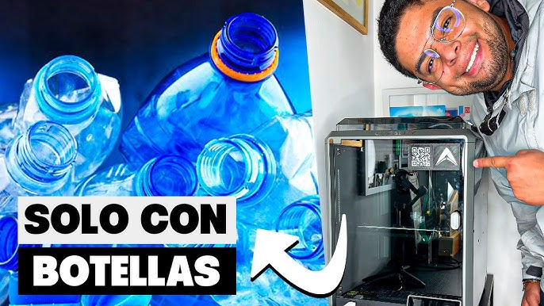
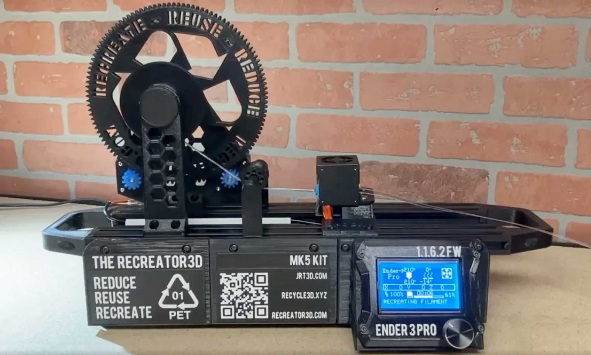
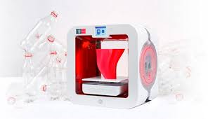
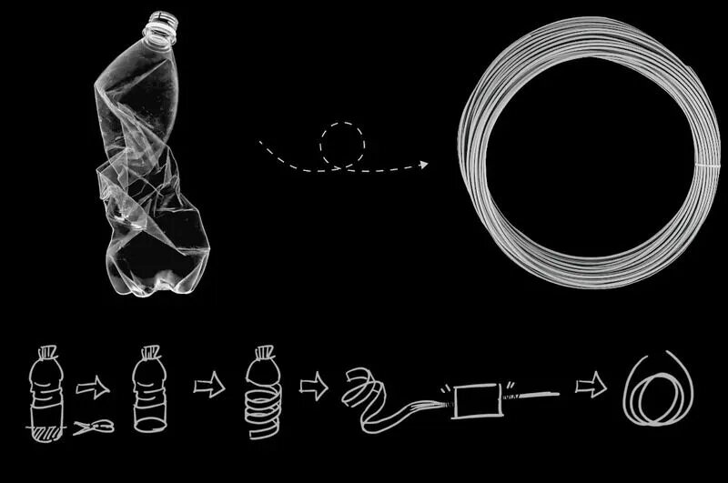
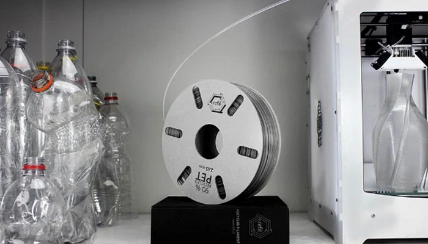

Transformamos residuos post-consumo en filamento de alta precisión para impresión 3D, cerrando el ciclo de la economía circular.
El reciclaje de plástico para impresión 3D implica convertir residuos post-consumo y post-industriales en filamento funcional mediante procesos térmicos y mecánicos controlados.
Este ciclo no solo reduce la cantidad de desechos que terminan en vertederos, sino que ofrece una alternativa sostenible y económica a los filamentos comerciales, impulsando la economía circular y la innovación en fabricación aditiva.





El proceso de extrusión requiere control preciso entre 180°C y 220°C para garantizar fusión homogénea sin degradación del polímero. Zonas térmicas independientes por tornillo.
Calibración continua mediante sensor láser de diámetro. Compatibilidad con diámetros estándar de 1.75mm y 2.85mm para todas las impresoras FDM del mercado.
El material debe secarse a <0.1% humedad residual antes de extrusión. La humedad excesiva genera burbujas, filamento quebradizo y defectos en impresión.
Geometría de tornillo especializada para plástico reciclado con zonas de compresión, fusión y dosificación. Relación L/D 25:1 para homogeneización completa del fundido.
Cada kilogramo de plástico reciclado es un kilogramo que no llega al océano. La tecnología ya existe — la decisión es ahora.